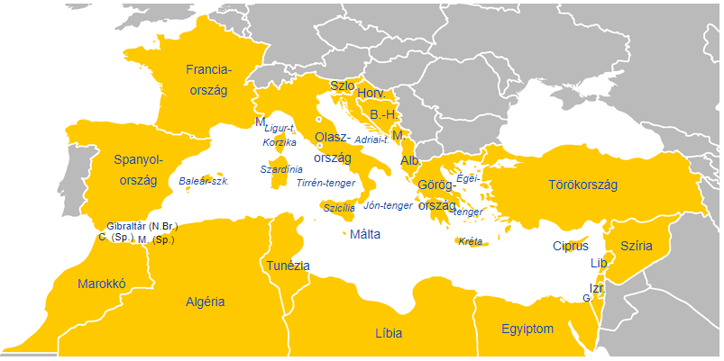

A Földközi-tenger
A Földközi-tenger az Atlanti-óceánhoz a Gibraltári-szorossal kapcsolódó melléktenger, amelyet három kontinens vesz körbe:
Európa (északról)
Ázsia (keletről)
Afrika (délről)
A Földközi-tenger térsége vagy Mediterráneum (mediterrán, azaz „földközi”) a partvidéki területekkel és a szigetekkel a nyugati civilizáció bölcsője. Az ókorban fontos közlekedési térségnek számított, az egyiptomiak, görögök, rómaiak és a közel-keleti népek is sokat utaztak és kereskedtek e tenger partjain.

Forrás: Földközi-tenger –Wikipédia
Adatlap
| Terület |
2 520 000 km2 |
| Hosszúság |
4000 km |
| Átlagos mélység |
1500 m |
| Legnagyobb mélység |
5267 m |
Más elnevezések
A Földközi-tenger egyes részeinek ősidők óta vannak egyéb, gyakran párhuzamosan vagy ellentmondásosan használt egyéb nevei is, például
Katalán-tenger
Szardíniai-tenger
Szicíliai-tenger
Líbiai-tenger
Levantei-tenger
Kedvenc város
Legszívesebben melyik várost látogatnád meg a Földközi-tenger partján?
Valencia
Barcelona
Nápoly
Monaco